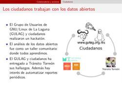
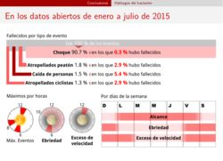

El Poder de los Datos Abiertos
Guillermo Valdés Lozano
2016-02-24 13:08:00-06:00
 
El 26 de febrero de 2016, PIDES Innovación Social y la Embajada del Reino Unido en México organizan el Encuentro de Ciudades Abiertas e Innovadoras 2016.
Con el honor de exponer las experiencias del municipio que represento, he publicado la presentación titulada "El Poder de los Datos Abiertos Gubernamentales" donde compartimos el camino recorrido para lograr que la información sobre Seguridad Vial aparezca en datos.gob.mx.